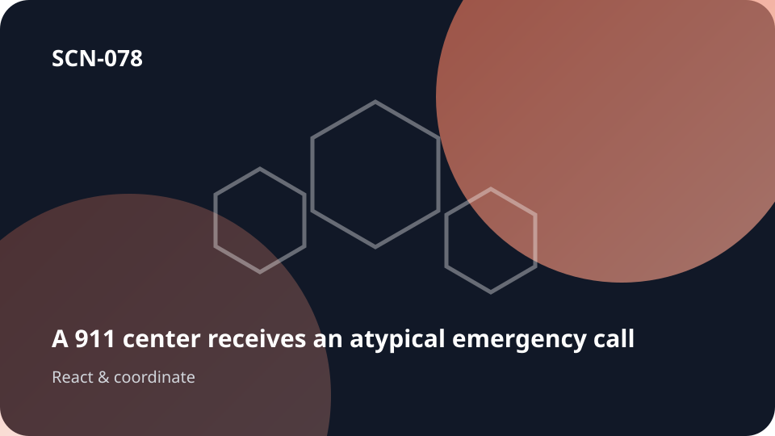

Point de départUn incident ou une situation qui évolue

SCN-078 · Répondre et coordonner
Le 911 reçoit en quelques minutes des appels différents décrivant peut-être le même événement
Bruits, fumée, coupures et témoignages contradictoires peuvent appartenir à un incident unique ou à plusieurs.
← Retour à la mosaïque complèteCe qui peut se perdre
La réalité change plus vite que le contexte partagé; les équipes risquent donc d’agir à partir d’informations différentes ou dépassées.
Koali maintient le lien
La valeur ne vient pas d’une fonctionnalité isolée. Elle vient du fait de préserver le même contexte tout au long de appels → … → résolution, afin que connaissances, personnes, choix, travail et mémoire restent reliés.
Déroulé
appels → localisation → corrélations → hypothèses → ressources → situation → résolution
Transposable àurgence · sécurité civile · centres d’opérations